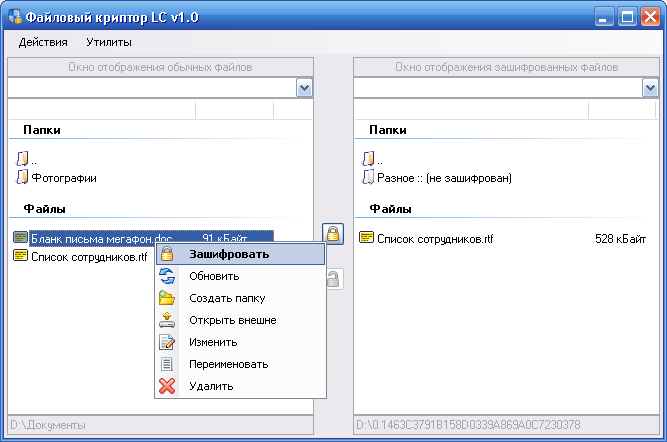
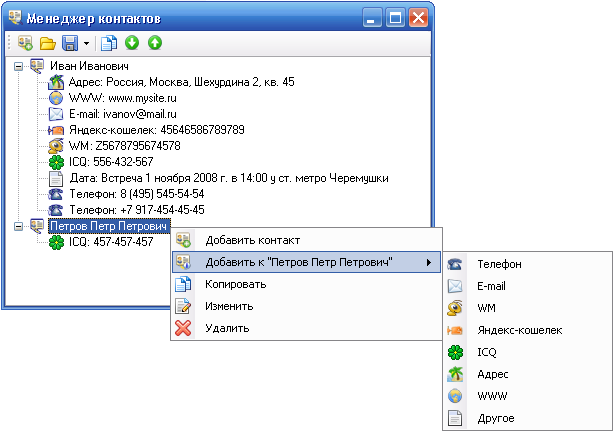

Файловый криптор LC v1.3
Программа для шифрования имен и содержимого файлов
Справочное руководство, скриншоты (157 кБайт)
Программа «Файловый криптор LC» v1.3 (121 кБайт)
Тестовый файл ключей. Пароль: 0 (1 кБайт)

Новое в версии 1.3
- Добавлено сворачивание программы в системный трей.
- Добавлен быстрый переход из каталога в корень диска.
- Добавлен Менеджер контактов.

Ссылки на предыдущие версии
Файловый криптор LC v1.0